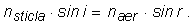
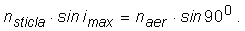
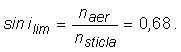
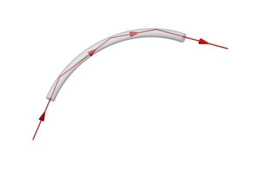
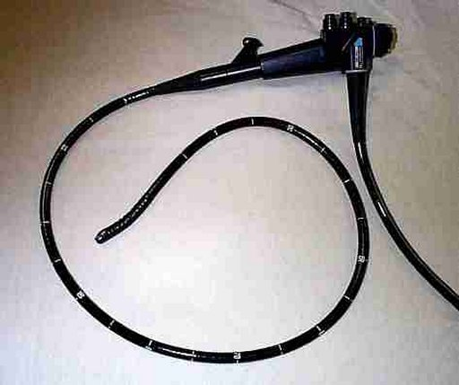

*Reflexia totală
Până acum ai investigat experimental refracţia luminii din aer în sticlă. Pot apărea oare surprize în cazul refracţiei din sticlă în aer?
 Activitatea experimentală 1
Activitatea experimentală 1
Investighează ce se întâmplă cu lumina care soseşte prin sticlă la suprafaţa de separare cu aerul. Lucrează în echipă.
Pasul 1. Aşezaţi semicilindrul de sticlă cu centrul în centrul diagramei cu direcţii de referinţă pe care ai construit−o la activitatea 1
de la secţiunea 1B3.
Pasul 2. Trimiteţi lumina laserului pe faţa curbă a semicilindrului, spre centrul acestuia.
Pasul 3. Colectaţi şi prelucraţi datele referitoare la reflexia şi refracţia luminii pe faţa plană a semicilindrului.
Pasul 4. Discutaţi rezultatele obţinute. Există rezultate surprinzătoare?
Un experiment de refracţie din sticlă în aer a condus la setul de date din tabelul 1.
Tabelul 1. Valorilor funcţiilor sinus ale unghiurilor de incidenţă, reflexie şi refracţie, la
suprafaţa de separaţie sticlă−aer.
sin i
(în sticlă) |
sin r1
(în sticlă) |
sin r2
(în aer) |
| 0,00 |
0,00 |
0,00 |
| 0,10 |
0,11 |
0,14 |
| 0,20 |
0,20 |
0,30 |
| 0,30 |
0,29 |
0,44 |
| 0,40 |
0,40 |
0,60 |
| 0,50 |
0,51 |
0,74 |
| 0,60 |
0,60 |
0,90 |
| 0,70 |
0,70 |
− |
| 0,80 |
0,80 |
|
| 0,90 |
0,90 |
|
Probabil ai obţinut şi tu un set de date asemănător.
Pentru unghiuri de incidenţă în sticlă suficient de mari, nu există lumină refractată în aer − toată lumina se reflectă înapoi în sticlă!

Numim reflexie totală fenomentul de reflexie a luminii neînsoţit de refracţie, la suprafaţa de separaţie cu un alt mediu, având indicele de
refracţie mai mic.
 Provocarea 1
Provocarea 1
Cât te aştepţi să fie unghiul minim de incidenţă în sticlă, pentru care apare reflexia totală la suprafaţa de separaţie cu aerul?
În cazul refracţiei sticlă−aer, legea a doua a refracţiei este:

Deoarece naer < nsticlă , rezultă că sin r > sin i.
Pentru unghiuri de incidenţă i suficient de mari, ar rezulta valori supraunitare pentru sin r, ceea ce nu este posibil pentru
nici o valoare a lui r!
Cea mai mare valoare a lui i pentru care mai are loc încă sens legea refracţiei este

Astfel, imax este unghiul limită, notat ilim, de la care avem reflexie totală în acest experiment:

Această valoare a sinusului corespunde unui unghi de incidenţă în sticla utilizată de aproximativ 430.
Provocarea 2
Cât te aştepţi să fie unghiul limită pentru reflexie totală la suprafaţa de separaţie apă−aer?
Cum ai putea verifica experimental aceasta, folosind un pahar transparent (cu apă) şi lumina laserului?
O aplicaţie interesantă a reflexiei totale este fibra optică − un fir subţire şi transparent (din sticlă sau mase plastice).
Un fascicul îngust de lumină, trimis razant spre interiorul firului, va suferi o succesiune de reflexii totale, urmând traseul firului, chiar dacă
acest traseu este întortocheat (figura 1)!

Fig. 1.  Traseul luminii în fibra optică.
Traseul luminii în fibra optică.
Când vorbeşti la telefon, sunetele captate de microfon sunt transformate în pulsuri de lumină, care se reflectă total în lungul unor fibre optice, care
leagă între ele oraşele!
Medicii folosesc mănunchiuri de fibre optice, cu care pot vedea interiorul corpului uman. Dispozitivul se numeşte endoscop (figura 2).

Fig. 2.
Endoscop.